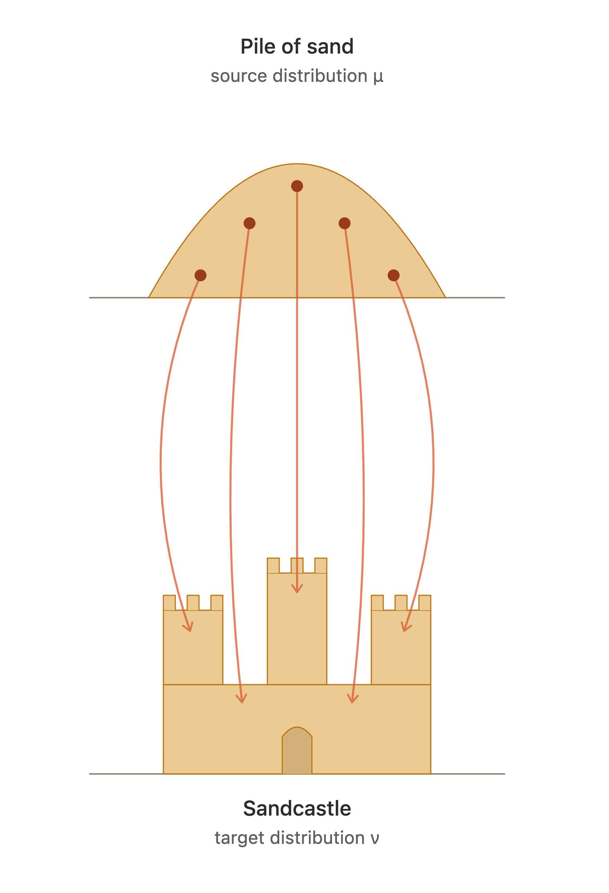
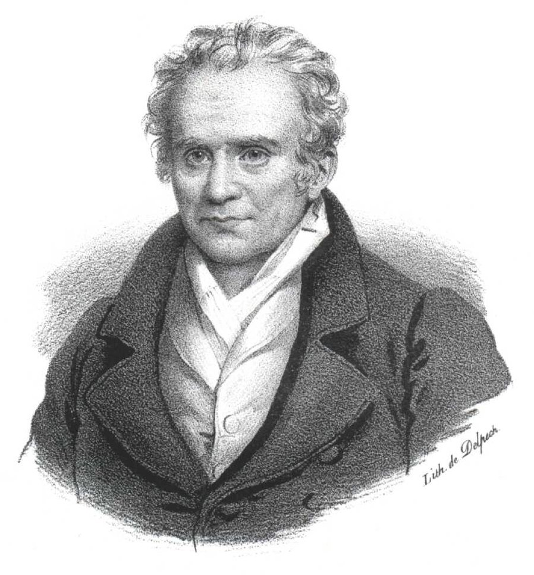
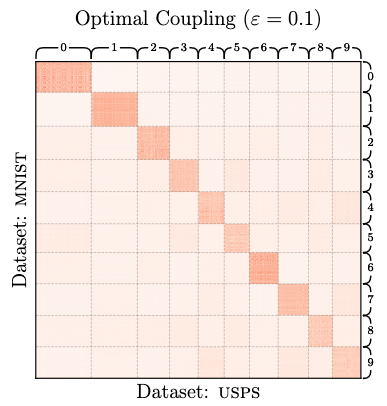

Gaspard Monge first formalised the OT problem in 1781
Consider two spaces, \(\mathcal{X}_A\) and \(\mathcal{X}_B\), with distributions \(P_A\) and \(P_B\). The Monge formulation is:
\[ \inf_{T, T_{\#}P_A=P_B}{\int{c(x, T(x))dP_A(x)}} \]

In 1942, Leonid Kantorovich developed a new formulation of OT. This avoids the problem that a transport map may not exist.
\[ \inf_{\pi \in \Pi(P_A, P_B)}{\int{c(x,x')d\pi(x, x')}} \]
In mathematical terms, a metric is any function \(d : X \times X \rightarrow \mathbb{R}\) which satisifies the following four axioms:
A lot of the time…
For the most part, OT is not solved in the continuous case.
But there is one exception…
\[ W^{2}_{2}(P_A, P_B) = \| \boldsymbol{\mu}_A - \boldsymbol{\mu}_B \|^{2}_{2} + \text{tr}\left( \boldsymbol{\Sigma}_A + \boldsymbol{\Sigma}_B - 2\left( \boldsymbol{\Sigma}_{A}^{\frac{1}{2}} \boldsymbol{\Sigma}_B \boldsymbol{\Sigma}_{A}^{\frac{1}{2}} \right)^{\frac{1}{2}} \right) \]
where \(\boldsymbol{\mu}_A\) and \(\boldsymbol{\mu}_B\) are the mean vectors for \(P_A\) and \(P_B\) respectively, \(\boldsymbol{\Sigma}_A\) and \(\boldsymbol{\Sigma}_B\) are the variance-covariance matrices for \(P_A\) and \(P_B\) respectively, the trace of a square matrix is the sum of its diagonal, and \(M^{\frac{1}{2}}\) gives the matrix square root, which is defined by \(S \cdot S = M\).
We can use this analytic form to compute a dataset distance metric under the following conditions:
Where these conditions are met, we can compute the means and variance-covariance matrices from the features of both datasets, and compute \(W^{2}_{2}\) as a dataset distance metric.
There is a defined solution to the Kantorovich formulation for discrete distributions, however. We will rewrite the formulation as:
\[ \langle \boldsymbol{C}, \boldsymbol{T} \rangle = \inf_{\boldsymbol{T} \in \Pi(\boldsymbol{a}, \boldsymbol{b})} \sum^n_{i=1} \sum^m_{j=1} \boldsymbol{C}_{ij} \boldsymbol{T}_{ij} \]
Another idea: treat each sample as a Dirac delta function, which has probability mass \(\frac{1}{N}\) at the sample and 0 elsewhere
\[ \delta(x-a) = 0 \; \text{for} \; x \neq a, \;\;\; \int{\delta(x-a)dx} = 1 \]
In practice:
Now we have discrete data without combinatorial explosions!
Because \(\boldsymbol{a}\) and \(\boldsymbol{b}\) should be marginal distributions of \(\boldsymbol{T}\), we have the constraints:
\[ \begin{align} \boldsymbol{T}\boldsymbol{1} = \boldsymbol{a}\\ \boldsymbol{T}'\boldsymbol{1} = \boldsymbol{b} \end{align} \]
A final constraint is that we cannot add or subtract mass, we can only move it. To enforce this, we have the further constraint:
\[ \forall \: i,j \; \boldsymbol{T}_{ij} \geq 0 \]
This is a linear programming problem!
scipy.optimize.linprog or the POT library\[ \inf_{\boldsymbol{T} \in \Pi(\boldsymbol{a}, \boldsymbol{b})} \langle \boldsymbol{C}, \boldsymbol{T} \rangle - \epsilon H(\boldsymbol{T}) \]
where $H()$ is the entropy of the transport matrix:
\[ H\left(\boldsymbol{T}\right) = - \sum^{n}_{i}\sum^{n}_{j} \boldsymbol{T}_{ij} \log \boldsymbol{T}_{ij} \]
and \(\epsilon\) is a regularisation parameter controlling the strength of the regularisation term. The regularisation term punishes transportation plans which are too concenrated, encouraging a more diffuse plan. This might seem odd at first as this runs counter to the notion of optimal transport. However, note two things. First, as \(\epsilon \rightarrow 0\), then this will converge on the true optimal transport solution. Second, including the regularisation term enables much easier computation of the optimal transport distance.
Introducing the term means that the optimal transport matrix \(\boldsymbol{T}^*\) can now be given by:
\[ \boldsymbol{T}^* = \text{diag}(\boldsymbol{u})\boldsymbol{K}\text{diag}(\boldsymbol{v}) \]
where \(\boldsymbol{K}\) is given by
\[ \boldsymbol{K} = e^{-\boldsymbol{C}/\epsilon} \]
\(\boldsymbol{u}\) and \(\boldsymbol{v}\) are vectors chosen to satisfy the marginal constraints from before, \(\boldsymbol{T}\boldsymbol{1} = \boldsymbol{a}\) and \(\boldsymbol{T}'\boldsymbol{1} = \boldsymbol{b}\). We can find them by performing coordinate descent, setting
\[ \boldsymbol{u} \leftarrow \frac{\boldsymbol{a}}{\boldsymbol{K}\boldsymbol{v}}, \boldsymbol{v} \leftarrow \frac{\boldsymbol{b}}{\boldsymbol{K}'\boldsymbol{u}} \]
where the divisions are element-wise.
When we compute OT in this way, we call it the Sinkhorn distance.
\[ \text{SD}_{\epsilon}\left(P_A, P_B\right) = \text{OT}_{\epsilon}\left(P_A, P_B\right) - \frac{1}{2}\text{OT}_{\epsilon}\left(P_A, P_A\right) - \frac{1}{2}\text{OT}_{\epsilon}\left(P_B, P_B\right) \]
where \(\text{OT}_{\epsilon}\) is the Sinkhorn distance estimated with a given value of \(\epsilon\).
So far we have ignored the fact datasets have labels
We have a cost function \(d_{\mathcal{X}}(x, x')\) for defining distance between points in the feature space \(\mathcal{X}\)
Imagine we have a cost function \(d_{\mathcal{Y}}(y,y')\) for defining distance between points in the label space \(\mathcal{Y}\)
Then we would have a distance metric between points in \(\mathcal{Z}\): \[ d_{\mathcal{Z}}(z, z') = \sqrt[p]{\left(d_{\mathcal{X}}(x, x')^p + d_{\mathcal{Y}}(y, y')^p\right)} \]
Unfortunately, many obvious candidates for \(d_{\mathcal{X}}\), none for \(d_{\mathcal{Y}}\)
E.g. how to get distance between "cat" and "car"?
We do have the distribution of features underneath the labels, e.g. for the label \(y\): \(\mathcal{N}_{\mathcal{D}}(y) := \left\{x \in \mathcal{X} | (x,y) \in \mathcal{D}\right\}\)
For labels \(y\) and \(y'\), we can compute the optimal transport distance between these distributions using the finite samples \(\mathcal{N}_{\mathcal{D}}(y)\) and \(\mathcal{N}\_{\mathcal{D}}(y')\)
Our distance metric \(d_{\mathcal{Z}}\) is therefore given by:
\[ d_{\mathcal{Z}}((x,y), (x',y')) = \sqrt[p]{\left(d_{\mathcal{X}}(x, x')^p + \text{OT}(P_{y}, P_{y'})^p\right)} \]
We have now defined optimal transport dataset distance (OTDD) between two datasets \(\mathcal{D}_A\) and \(\mathcal{D}_B\):
\[ d_{\text{OT}}\left(\mathcal{D}_A, \mathcal{D}_B\right) = \inf_{\pi \in \Pi(P_A, P_B)}{\int{d_{\mathcal{Z}}(z,z')d\pi(z, z')}} \]
